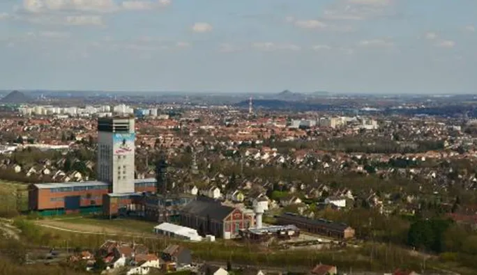

Chers amis randonneurs, Nous sommes ravis de vous annoncer
la 48ème édition de la Randonnée de la Gohelle qui aura lieu le
Dimanche 2 avril 2023
Cet événement annuel est l'occasion idéale pour se connecter avec la nature et explorer les magnifiques
paysages du territoire.
Les participants choisissent parmi 4 parcours de difficulté différents,
adaptés aux débutants ainsi qu'aux randonneurs expérimentés,
allant de 5 à 20km.

Il s’agit d’une des plus grandes randos gratuites au nord de la France. Et ce n’est pas près de s’arrêter. Pour sa 47e édition, la Rando de la Gohelle ne déroge pas à la règle et vous apporte toujours un parcours 100% nature autour de Liévin, de ses bois et de son terril de Pinchonvalles.
Une occasion unique et originale de découvrir notre territoire, sa faune et sa flore au tout début du printemps.
« Nous avions du l’annuler en 2020, et nous avons proposé une version beaucoup plus light en 2021, se souvient Henri Jackowski, adjoint aux sports .
Organisée par la municipalité, la Rando de la Gohelle est le rendez-vous de tous les marcheurs... et des amoureux de la nature. L’une des plus anciennes randonnées de la région et une des plus populaires car elle attire environ près de 3000 randonneurs venus de du Nord, de Belgique, de la région parisienne, et de Liévin.